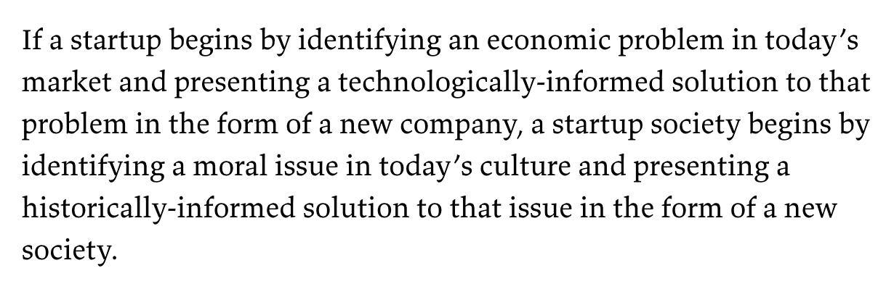
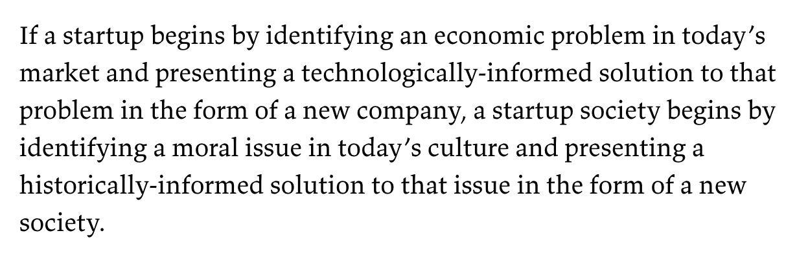

the
crypto
anarchist
manifesto,
by timothy c. may, 1988
a specter is haunting the modern world, the specter of crypto anarchy.
computer technology
is on the verge of providing the ability for individuals and groups to communicate and interact with each other
in a totally anonymous manner. two persons may exchange
messages, conduct business, and negotiate electronic contracts without ever knowing the true name, or legal identity,
of the other. interactions over networks will be untraceable, via extensive re-routing of encrypted packets and
tamper-proof boxes which implement cryptographic protocols with nearly perfect assurance against any tampering.
reputations
will be of central importance, far more important in
dealings
than even the credit ratings of today. these developments will alter completely the nature of government
regulation, the ability to tax and control economic
interactions, the ability to keep information secret, and will even alter the nature of trust and reputation.
the
technology for
this revolution—and it surely will be both a social and economic revolution—has existed in theory for the past
decade. the methods are
based
upon public-key encryption,
zero-knowledge interactive
proof systems, and various software protocols for interaction, authentication, and verification. the
focus
has until now been on academic conferences in europe and the u.s., conferences monitored closely by the national
security
agency. but only recently have computer networks and personal computers attained sufficient speed to make the
ideas practically realizable. and the next ten years will bring enough additional speed to make the ideas
economically feasible and essentially
unstoppable. high-speed networks, isdn, tamper-proof boxes,
smart
cards, satellites, ku-band transmitters, multi-mips personal computers, and encryption chips now under
development will be some of the enabling technologies.
the state will of course try to slow or halt the spread of this
technology, citing national security
concerns, use of the technology by drug dealers and tax evaders, and fears of societal disintegration. many of these
concerns will be valid; crypto anarchy will allow national secrets to be trade
freely and will allow illicit and
stolen materials to be traded. an anonymous
computerized
market will even make possible abhorrent markets for assassinations and extortion. various criminal and foreign
elements will be active users of cryptonet. but this will not halt the spread of crypto anarchy.
just as the technology of printing altered and reduced the power of medieval guilds and the social
power structure, so too will
cryptologic methods fundamentally alter the
nature
of corporations and of government interference in economic transactions. combined with
emerging information markets, crypto
anarchy will create a liquid market for any and all material which can be put into words and pictures. and just
as a seemingly minor invention like barbed wire made possible the fencing-off of vast ranches and farms, thus
altering
forever
the concepts of land and property rights in the
frontier
west, so too will the seemingly minor discovery out of an arcane branch of mathematics come to be the wire
clippers which dismantle the barbed wire around intellectual property.
arise, you have nothing to lose but your barbed wire fences!


 
